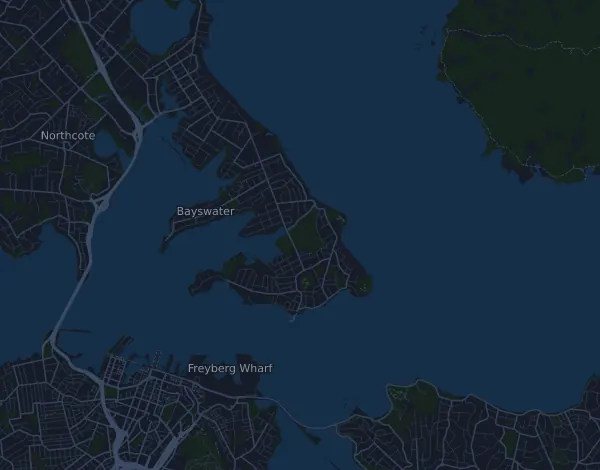

Barfoot & Thompson Auckland Marathon 42,5 km
- Distancia
- 42,5 km
- Desnivel positivo
- ↑ 407 m
- Punto más alto
- 42 m s. n. m.
- Superficie
- Asfalto
- Perfil
- Ligeramente ondulado
Perfil de altitud
Prepárate con Mila
Mila es un coach de running en una app. Si añades una carrera a tu plan, el coach planifica tus semanas hasta la salida según tu forma y te da un pronóstico de tiempo y un plan de ritmo, hidratación y energía para el recorrido.

La sesión justa. El día justo.
El recorrido

Sobre el recorrido
Barfoot & Thompson Auckland Marathon es una carrera en ruta de 42,5 km (Devonport, Auckland, Nueva Zelanda). El recorrido acumula 407 m de desnivel positivo y 402 m de desnivel negativo, 9,6 m por km, así que es ligeramente ondulado. El punto más alto está a 42 m sobre el nivel del mar y el más bajo a -1 m.
La subida más grande empieza en el km 2,1: 33 m de desnivel en 3,2 km, con un 1,0 % de media, hasta los 42 m.
En la app Mila, el coach describe el recorrido en detalle en tu idioma y planifica tu ritmo y tu avituallamiento.
Subidas
| Empieza en | Longitud | Desnivel | Pendiente | Cima (m s. n. m.) |
|---|---|---|---|---|
| km 2,1 | 3,2 km | 33 m | 1,0 % | 42 |
Tabla de ritmos
Barfoot & Thompson Auckland Marathon 42,5 km en 3:00:00 – ritmo por km y tiempos de paso
4:14 min/km · km 10: 42:24 · km 21,1: 1:29:28 · km 30: 2:07:13 · km 40: 2:49:37 · meta: 3:00:00
Barfoot & Thompson Auckland Marathon 42,5 km en 3:30:00 – ritmo por km y tiempos de paso
4:57 min/km · km 10: 49:28 · km 21,1: 1:44:23 · km 30: 2:28:25 · km 40: 3:17:53 · meta: 3:30:00
Barfoot & Thompson Auckland Marathon 42,5 km en 4:00:00 – ritmo por km y tiempos de paso
5:39 min/km · km 10: 56:32 · km 21,1: 1:59:18 · km 30: 2:49:37 · km 40: 3:46:09 · meta: 4:00:00
Barfoot & Thompson Auckland Marathon 42,5 km en 4:30:00 – ritmo por km y tiempos de paso
6:22 min/km · km 10: 1:03:36 · km 21,1: 2:14:12 · km 30: 3:10:49 · km 40: 4:14:25 · meta: 4:30:00
Los tiempos suponen un ritmo constante de principio a fin. Es pura aritmética, no un pronóstico: en las subidas, entre la gente y en los avituallamientos el ritmo varía.
Preguntas frecuentes
¿Cuándo es Barfoot & Thompson Auckland Marathon 42,5 km?
La carrera se celebró el domingo, 1 de noviembre de 2026. La fecha de la próxima edición aún no está fijada.
¿Cuánto mide Barfoot & Thompson Auckland Marathon 42,5 km y cuánto desnivel tiene?
La carrera tiene 42,5 km, con 407 m de desnivel positivo y 402 m de desnivel negativo. El punto más alto está a 42 m sobre el nivel del mar.
¿Cómo es el recorrido de Barfoot & Thompson Auckland Marathon 42,5 km?
El recorrido es ligeramente ondulado, con 9,6 m de desnivel por km de media. Tiene una subida de al menos 25 m, en el km 2,1: 33 m en 3,2 km. Va de la salida a una meta situada en otro lugar. Se corre sobre asfalto.
¿Cómo reparto el ritmo en Barfoot & Thompson Auckland Marathon 42,5 km?
Busca un esfuerzo constante más que un ritmo constante: deja que el ritmo baje en las subidas, recupéralo cuando el terreno se allane y contente en los primeros kilómetros. Las subidas más grandes empiezan en el km 2,1. En Mila tienes un plan de ritmo para este recorrido, según tu propia forma.
Más carreras como esta
Más carreras cerca
- New Zealand Sotheby's International Realty Queenstown Marathon 42,2 km14 de noviembre de 2026 · Millbrook Resort, Arrowtown (Queenstown), Nueva Zelanda
- Kepler Challenge 60 km5 de diciembre de 2026 · Te Anau, Nueva Zelanda
- Athens Marathon. The Authentic – Marathon 42,2 km8 de noviembre de 2026 · Marathon, Grecia
Prepárate con Mila
La sesión justa. El día justo.
Los datos proceden del archivo del recorrido y de la información del organizador. Comprueba la fecha, las horas de salida y el reglamento con el organizador.
Mila no está vinculada al organizador ni a los patrocinadores de la carrera, ni está patrocinada o avalada por ellos. Los nombres y las marcas pertenecen a sus propietarios. ¿Organizador o titular de derechos? Solicitar un cambio o la retirada